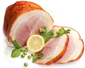

Буженина — блюдо, распространённое в украинской, молдавской и русской кухнях: свинина (реже — баранина, медвежатина), запечённая большим куском. Аналоги этого блюда (то есть свинина, запечённая большим куском) есть в австрийской и квебекской кухнях.Буженина обычно приготавливается из натёртого солью и специями свиного окорока без кости. Мясо натирают маслом, поливают мясным соусом и ставят в духовку. Иногда в соус добавляют вино или пиво. Некоторые виды буженины перед приготовлением заворачивают в фольгу. До полной готовности буженина выпекается в течение 1—1,5 часов.
Полезные свойства бужениныВ зависимости от выбранного мяса буженина содержит от 200 до 300 калорий, до 17г белков, до 19г жиров, до 2г углеводов.
Буженина, самая безопасная из колбасных изделий. В идеале ее приготавливают простым запеканием куска мяса в духовке, с добавлением чеснока и специй.
Буженину нетрудно приготовить и дома.
Мясо натираем солью и перцем, причем перец можно взять
любой красный или черный, а также сверху посыпаем нарезанным
чесноком. Можно в мясе сделать небольшие надрезы и в
них вставить чеснок, просто чтобы не выпадал.
Подготовленное мясо выкладываем на лист, чуть смазанный растительным маслом, и, естественно, отправляем на запекание в духовку, разогретую до 180^(o)С. (Или в пароварку) Во время приготовления, мясо следует периодически переворачивать и поливать выделяющимся жиром, чтобы оно хорошо пропеклось с двух сторон и не подгорело. Проверить готовность очень легко, просто прокалываем острым ножом мясо и смотрим, если сок вытекает светлый – значит оно пропеклось.
Кстати приготовленная на пару буженина - отличное кушанье для тех кому нельзя жаренного.
К сожалению, у нас пока нет информации о вредных свойствах данного продукта.